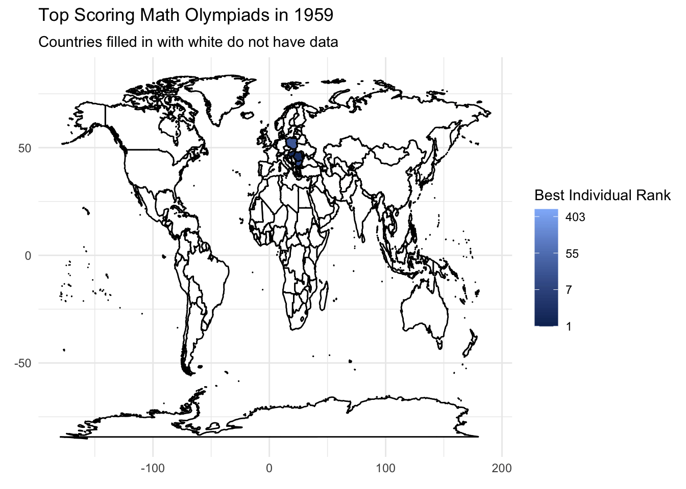

library(tidyverse)
library(maps)
library(gganimate)Math Olympiad Ranks
Mapping the highest ranked math olympiads per year
The data for this week comes from International Mathematical Olympiad (IMO). Thank you to Havisha Khurana for curating this week’s dataset.
Importing libraries
Importing data
individual_results_df <- read_csv('https://raw.githubusercontent.com/rfordatascience/tidytuesday/master/data/2024/2024-09-24/individual_results_df.csv')First we replace the value “C” followed by a number which appears to represent Russia.
indiv_country <- individual_results_df |>
mutate(country = ifelse(str_detect(country, "C[0-9]"), "Russia", country)) We see that quite a few countries are represented in the data in 2024 whcihc an be enough to make a nice map plot.
indiv_country |>
filter(year == 2024) |>
summarise(distinct_countries = n_distinct(country))# A tibble: 1 × 1
distinct_countries
<int>
1 109Data Prep
Data prep for makeing the map graph. We specifically need to convert the country names into a consistent form to be able to merge with map data. We are going to take the top performing contestant from each county and year.
indiv_country <- indiv_country |>
group_by(country, year) |>
arrange(individual_rank) |>
slice_head(n = 1) |>
arrange(desc(year)) |>
select(year, country, individual_rank, award) |>
mutate(country = case_when(
country == "United States of America" ~ "USA",
country == "People's Republic of China" ~ "China",
country == "Türkiye" ~ "Turkey",
country == "Islamic Republic of Iran" ~ "Iran",
country == "Republic of Korea" ~ "South Korea",
country == "Islamic Republic of Iran" ~ "Iran",
country == "Turkish Republic of Northern Cyprus" ~ "Cyprus",
country == "Democratic People's Republic of Korea" ~ "North Korea",
country == "United Kingdom" ~ "UK",
TRUE ~ country
))
indiv_country# A tibble: 3,781 × 4
# Groups: country, year [3,781]
year country individual_rank award
<dbl> <chr> <dbl> <chr>
1 2024 Albania 252 Bronze medal
2 2024 Algeria 47 Gold medal
3 2024 Argentina 82 Silver medal
4 2024 Armenia 182 Bronze medal
5 2024 Australia 29 Gold medal
6 2024 Austria 90 Silver medal
7 2024 Azerbaijan 252 Bronze medal
8 2024 Bangladesh 216 Bronze medal
9 2024 Belarus 11 Gold medal
10 2024 Belgium 147 Silver medal
# ℹ 3,771 more rowsHere we will generate the map data from the maps library and we see that the number of countries it has registered is more than double what we see in 2024, which means we may have quite a big part of our map that is empty.
world_data <- map_data("world")
world_data |>
summarize(n_distinct(region)) n_distinct(region)
1 252Now we will merge the two datasets for plotting.
plot_imo <- world_data |>
left_join(indiv_country, by = c("region" = "country")) |>
filter(!is.na(individual_rank))Graphing
plot_imo |>
ggplot(aes(x = long, y = lat, group = group)) +
geom_polygon(data = world_data,
aes(x = long, y = lat, group = group),
color = "black", fill = "white") +
geom_polygon(aes(fill = individual_rank), color = "black") +
scale_fill_gradient(name = "Best Individual Rank",
trans = "log",
low = "#0e2e61",
high = "#91b9fa",
labels = scales::label_number(accuracy = 1)) +
theme_minimal() +
transition_states(year,
state_length = 5,
transition_length = 10) +
labs(title = 'Top Scoring Math Olympiads in {closest_state}',
subtitle = "Countries filled in with white do not have data",
x = "",
y = "",
fill = "Best\n Individual Rank")